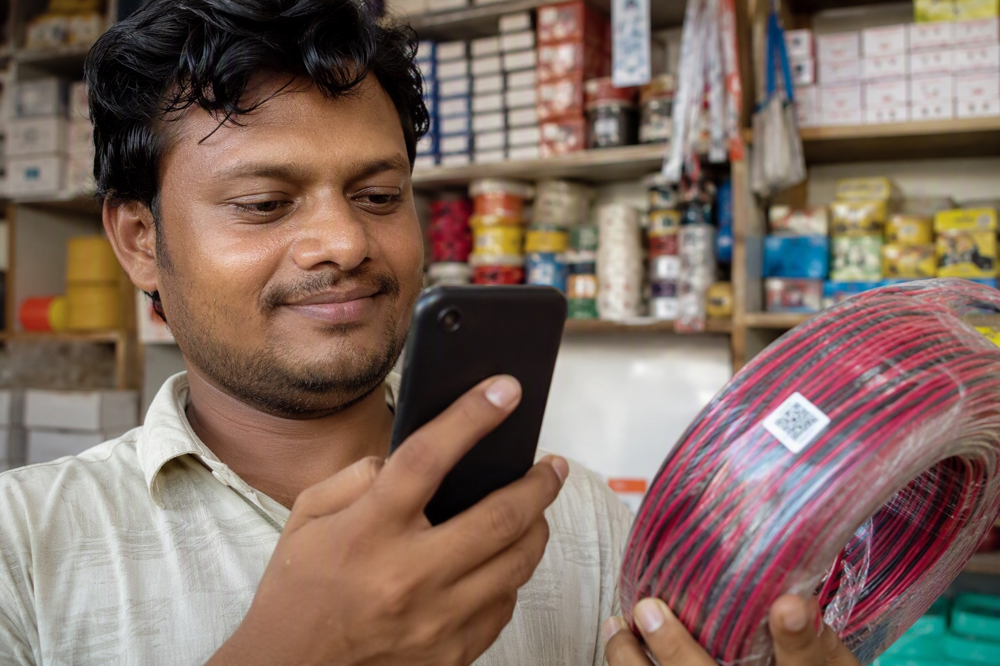

To check if a Finolex wire is original, scan the QR code printed on the coil or carton with the scanner on this page or at check.finolex.com. Finolex's server replies genuine, not genuine or could not confirm. A genuine reply on the outer QR plus a matching reply on the inner QR, with the size and range printed on the wire matching the carton, is proof the coil is original.

Scan your Finolex QR code
Scan the Finolex QR code here
Point your phone camera at the QR on the coil or carton. The code is checked against Finolex's own verification server and the answer appears below, without leaving this page.
The reply comes live from Finolex's verification service at check.finolex.com; Mount Cable India only relays it and stores nothing. If the check does not load, open check.finolex.com directly. Finolex customer care: 1800-209-0166.
How the Finolex wire scanner works
There is no separate Finolex scanner app to install. Finolex prints a unique QR on the carton label and a second one inside the box, and records both against the product, size and batch. The check is a single web page, check.finolex.com, which opens the phone camera, reads the QR and asks Finolex's server whether that code exists and has not already been used. The scanner above does exactly the same thing, on this page, by sending the code to the same Finolex service and showing its reply verbatim.
Three ways to use it:
- Camera. Tap Start camera scan, allow the camera, and hold the QR inside the square. The code is read automatically.
- Photo. Tap Upload a photo of the QR and take a picture of the label, or choose one already on the phone. Fill the frame with the code.
- Paste. If your camera app has already read the QR and shown you the text, paste it in the box and tap Check code.
The result appears in a few seconds. Nothing you scan is stored by Mount Cable India.
What each result means
| Finolex reply | What it means | What to do |
|---|---|---|
| Thank you for purchasing genuine Finolex product | The code is registered and this is its first scan, or the scan matches the record. | Scan the inner QR too, then check the wire printing matches the carton. See what the genuine message proves. |
| Sorry, this is not a genuine Finolex product | The code is not in Finolex's records. The carton or label is counterfeit. | Do not pay. Photograph everything and read what to do about a duplicate coil. |
| This may be duplicate cables, please contact Finolex team | The code could not be matched: it may be damaged, mistyped, or already scanned as used elsewhere. | Try the inner QR, or the outer one again in better light. If both fail, treat the coil as unverified. See the already-used QR guide. |
| Could not reach the Finolex server | The check did not go through: no network, or the Finolex service is down. | Open check.finolex.com directly, or WhatsApp a photo of the QR to 88676 76700 and we will check it. |
If the QR will not scan at all, the label may be printed too poorly to read, which is itself a warning sign on a brand that prints crisp codes. Finolex QR code not scanning covers the causes.
Outer QR and inner QR: check both
The outer QR is on the carton label. It proves the carton left a Finolex plant. The inner QR is on a slip or label inside the box, and it proves the coil in the box is the one the carton was packed with. Counterfeiters have learned to reuse genuine cartons, so a genuine outer scan with a missing or failing inner scan is the pattern to watch for. Our step-by-step guides: the outer QR and the inner QR.
Then look at the wire itself. Genuine Finolex prints the brand, size, voltage grade and ISI mark at regular intervals along the insulation in clean, consistent lettering. Compare it with the carton: a 2.5 sq mm carton holding wire marked 1.5 sq mm, or wire with no printing, fails regardless of the QR. Reading Finolex insulation markings shows what to look for.
check.finolex.com and the Finolex True Product checker
People search for the Finolex scanner under several names: Finolex wire scanner, Finolex QR code scanner, Finolex true product checker, check finolex com. They all mean the same official check at check.finolex.com. The site is a camera scanner page rather than a form, so if you open it on a laptop without a camera it will appear to do nothing; use a phone, or use the photo upload on this page. When a QR is scanned by a normal camera app the code text is the string the app shows; that text is what gets verified, so pasting it here works too.
Two cautions. First, only trust a result that comes from Finolex's own domain, finolex.com. A QR that opens some other website with a green tick is a counterfeit label pointing at a counterfeit checker. Second, a verified QR proves the carton and coil are Finolex; it does not tell you the coil is full length or the right size for the job. For that, weigh the coil, check the printing and buy from an authorised dealer whose invoice carries the batch.
If the scan fails: what to do next
- Do not pay. If you have already paid, do not let the electrician cut the seal or start the run.
- Photograph the carton, both QR labels, the wire printing and the seller's bill.
- Tell the seller the scan failed and ask for a replacement coil that scans genuine in front of you. A genuine dealer will do this without argument.
- Report it. Finolex customer care is 1800-209-0166. The complaint guide has the details to include.
- Get a reference price. A coil sold well below the Finolex price list is the usual origin of a failed scan. WhatsApp your list to 88676 76700 for an itemised quote and compare.
Why duplicates are common in Bangalore, and how the electrician and retailer chain feeds it, is explained in why duplicate Finolex wire is increasing and the electrician-retailer nexus.
Buy Finolex that has already been scanned
Every coil Mount Cable India delivers can be scanned at your site before you pay: outer QR, inner QR, and the wire printing checked against the carton with our delivery staff standing there. We have supplied Finolex in Bangalore for 35 years from Jayanagar and Chickpete, and our prices are published in full on the Finolex price list and the buy Finolex wires page. The complete verification guide, from carton to invoice, is at original Finolex wires.